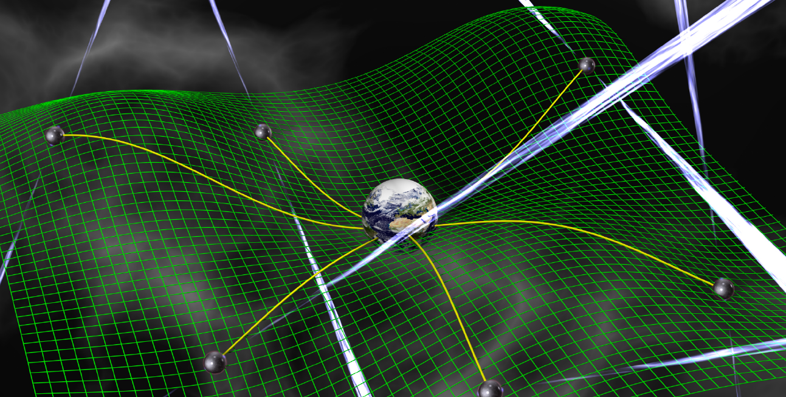

Pulsar Timing Arrays
 Pulsars are rapidly rotating, highly magnetized neutron stars that emit beams of radiation along their magnetic field axis. The misalignment of their magnetic field axis with their rotational axis is why we call them pulsars - as the star swings its radiation beam into our line-of-sight we register a brief pulse of electromagnetic radiation in our detectors. These pulsars are nature's lighthouses.A particular breed of pulsars spin around hundreds of times per second. These millisecond pulsars (MSPs) have such stable and predictable pulse arrival times that we can use them as natural clocks in the sky. We build up highly accurate models for these pulse arrival times, then dig into any small deviations of the real arrival times from our predictions. It is in these deviations (or "residuals") that lie some fascinating prospects for gravitational-wave detection.
A background of nanohertz gravitational waves will bathe all the pulsars in our galaxy with its common influence. This background jiggles the Earth and pulsars up and down, much like buoys on the surface of an ocean, causing advances or delays in the pulsar arrival times. If we look for structure in the timing residuals of a pulsar, and find significant power at nanohertz frequencies, then we might have a clue that a background of gravitational waves has left its mark.
However sometimes the pulsars themselves can create this structure. The only way we can unambiguously say that gravitational waves have affected the pulse arrival times is by observing many pulsars, then correlating the arrival times of the entire ensemble to look for common low-frequency structure. Such a background of gravitational waves could be produced by the inspiral of many supermassive black-hole binaries at the centers of recently merged galaxies all throughout cosmic time. If any of these signals is loud enough then we may be able to detect it as an individual source. See the options below for further details.
Image credit: David Champion